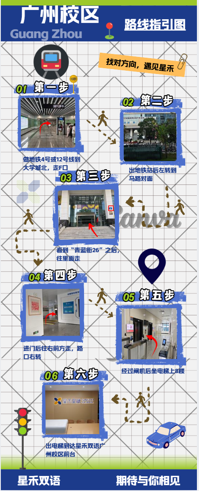

亲爱的小明
欢迎来到 星禾星穗 线下体验课
广州校区路线指引
大学城北 F 口出站，前往青蓝街 26，再乘电梯到 8 楼前台。

按图中六步前往校区
- 乘地铁 4 号或 12 号线到大学城北，走 F 口。
- 出地铁站后左转，到马路对面。
- 看到“青蓝街 26”后，往里面走。
- 进门后往右前方走，路口右转。
- 经过闸机后，乘电梯上 8 楼。
- 出电梯后，到达星禾双语广州校区前台。
点击开关或文字翻面。键盘可使用 Tab 聚焦开关、空格切换。路线图区域可用方向键滚动。
亲爱的小明
大学城北 F 口出站，前往青蓝街 26，再乘电梯到 8 楼前台。

按图中六步前往校区
点击开关或文字翻面。键盘可使用 Tab 聚焦开关、空格切换。路线图区域可用方向键滚动。